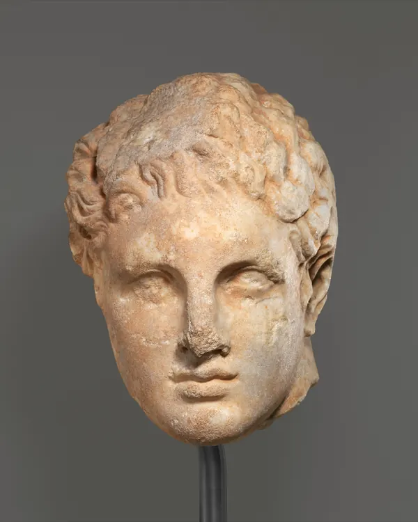

О проекте
«Канон»: развлекательное издание о луксмаксинге, трендах, привычках и спорах вокруг внешности.
Новости на сайте придуманы редакцией. Люди, клиники, студии и приложения в них вымышлены, любые совпадения случайны. Единственный материал с настоящими данными: эксперимент, в котором мы оценили 22 античные головы алгоритмом Telegram-бота I WANNA MOG YOU.
Мы не даём медицинских советов. Если вас беспокоит здоровье, кожа или зубы, обратитесь к врачу. Если мысли о внешности мешают жить, поговорите с близкими или психологом.
Откуда фотографии
Все изображения скульптур взяты из открытой коллекции музея Метрополитен (The Met Open Access) и переданы в общественное достояние по лицензии CC0.
- Мраморный портрет Антиноя, около 130-138 гг. н. э. Карточка в коллекции The Met
- Мраморный портрет императора Константина I, около 325-370 гг. н. э. Карточка в коллекции The Met
- Мраморная голова юноши, III в. до н. э. Карточка в коллекции The Met
- Мраморная голова молодой женщины с надгробной статуи, конец IV в. до н. э. Карточка в коллекции The Met
- Известняковая голова Аполлона, I в. до н. э. Карточка в коллекции The Met
- Мраморная голова атлета, около 138-192 гг. н. э. Карточка в коллекции The Met
- Мраморный бюст Геродота, II в. н. э. Карточка в коллекции The Met
- Известняковая голова Аполлона, середина III в. до н. э. Карточка в коллекции The Met
- Мраморный бюст юноши, около 140 г. н. э. Карточка в коллекции The Met
- Мраморная голова юноши, 117-161 гг. н. э. Карточка в коллекции The Met
- Мраморная голова юноши с рельефа, конец IV в. до н. э. Карточка в коллекции The Met
Шрифты
Source Serif 4 (Adobe) и Geist (Vercel), лицензия SIL Open Font License. Иконки Phosphor (MIT).
